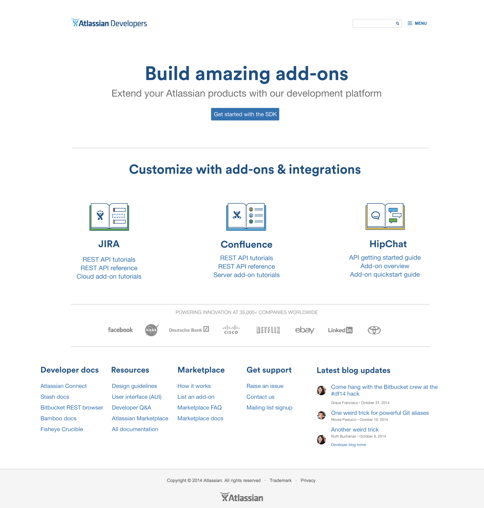

Redesigning Atlassian Developer Documentation & Remodeling IA
Our previous redesign of our developer documentation site had technically lived up to its aspirations: It was on brand, and had a new layout. But, our brand guidelines quickly changed. Our typography guidelines, logos, and even illustration style changed in a short period, and our site looked dated.
But that wasn’t the only problem. Users we showed the site to complained that it looked like “any” site, but that it had a lot of jargon. When we asked them what the difference between ‘cloud’ and ‘server’ were, we got blank stares. We reskinned something, but the utility for users wasn’t improved at all.
We learned many things from the first redesign:
- Set clear metrics from the outset of the project
- Look at data first, before we start sketching ideas
- Pair a data dive with qualitative research: What do people think of our current design?
Here’s what it looked like before:

What we did differently
We divided our goals into three parts:
- Where are people already going on our site? (and, how can we help them get there?)
- What are people searching for on our site? (and, how can we optimize for their terms?)
- What do we want to show people on our site? (and, where does it belong with all these other goals?)
For the first goal, we took a deep dive into Google Analytics. We looked at page hits, and divided them up by product. We realized we’d made a crucial mistake in the first redesign: People didn’t conceptualize their development needs by SaaS or behind-the-firewall platform, they just thought about the product they were developing for. We talked to customers at Summit, and found that people didn’t care much about (or even know about) the deployment model, just the product they were working on. We saw data trends that clustered around certain products: High hits on JIRA, with Confluence coming in second. Everything else was basically small potatoes, and nobody was really going to sections “about” SaaS or server deployment.
Then, we looked at what people were searching for. The documentation was well-indexed by Google, and reaffirmed our insight about the product-centric need for content (not platform-centric). We also saw that people were searching mostly on Google, and that was their entry point. So, we needed to create an intuitive navigation structure to support the majority of people entering from Google, not just a nice homepage.
Finally, we examined what we wanted to reveal to customers. We had some newer products, like HipChat, with robust, comprehensive, up-to-date documentation we could showcase. We also had great documentation for lots of other products, but not very comprehensive. We wanted to showcase the best of the best, and provide a point-of-entry for a growing product. We also had a new blog series emerging from developers, and it seemed prudent to make this easy to find. This way, we could showcase that this was a site that was alive: People were contributing, and the community was actively writing blogs about it.
With all three areas, we had lots of topics to surface; but no real structure yet. We turned to card sorting. Unfortunately, we weren’t able to validate our card sorting with customers, but we did get various developers within a 1000+ person company to participate. We saw the same product-centric pattern: Organizing topics by product, and starting with tutorials and resources. We created a draft version, validated it with stakeholders, and made high-fidelity mockups. We sparred lots of versions of the homepage and information architecture with designers from around the company.
Our final design resulted in this: 